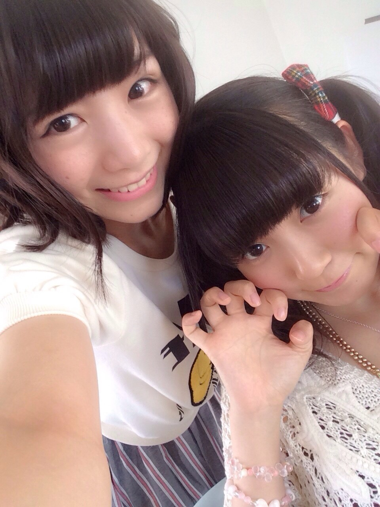
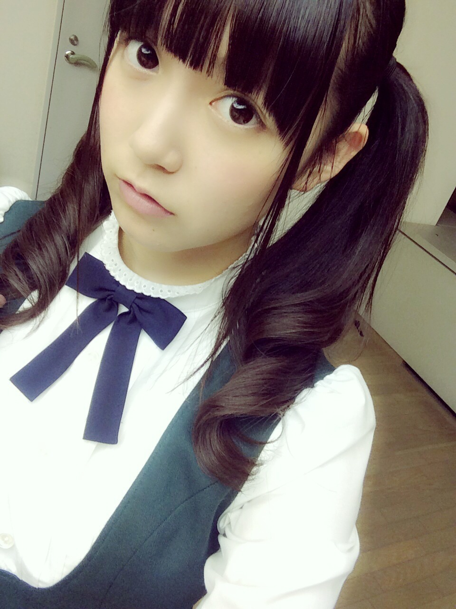
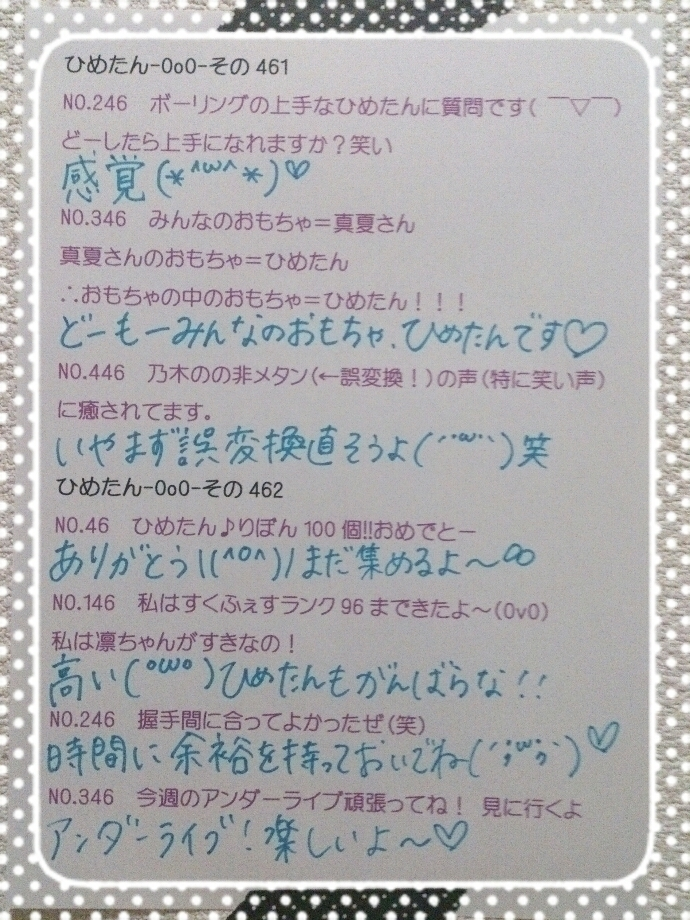

| 2014/10 14 Tue | ひめたん-OoO-その488 |

前回の乃木どこの
「あの日 僕は咄嗟に嘘をついた」
スタジオライブ！
ごめんね告知してなかった～
みてくれたひといるかな？
おともだちに
乃木どこ毎週録画してるひといたら
みせてもらってね(＊＾ω＾＊)
＼チーム秋葉原／

オンエア観たよ
私たちボロボロだったね(笑)
いや、でも、
楽しそうなのは伝わる！
むしろ一番楽しそう！
だって見てよこの華やかな写メ！
陽菜ちゃんなんて甲冑着てるんだよ
秋葉原行ってみたくなる......よね(`ºωº´)
後編もみてね～

がおー♡
発売中「OVERTURE」の私服
あんまり見えないけど
アクセサリーはままの手作りだったり。
なんかね、
オシャレになりたい～って
愛未ちゃんに相談したら
とりあえず雑誌買ってみなよって。
なるほど～そうだよね( 'ω' )

アンダーライブ後半戦！
昨日は真夏さん未央ちゃんが
遊びに来てくれました∩(・ω・)∩
もっと、もっと何か
仕掛けられないかなーって
毎日みんなと話し合って頑張ってるよ～
この写メのツインね
うしろめの位置で結んでもらって
内巻きにするのが最近お気に入りなの～
メルヘンツイン♡♡
ぼーいずはそんなに違いわかんないかな？笑
しばらくこの形でいこっかな～
あ、そういえば
公式サイトのプロフィール写真
変わってた！
なんか眠そう(´-ω-`)笑

 のぎ天で
のぎ天で
「ウサギの感触はひめたんの首の裏と同じ」
っていわれてたけど、あれどういうこと？
なるほど、うさぎさんの感触が
触らずとも伝わってしまった( ºωº )
的確な表現だと思いますよ(笑)
ひめたんの日課は？
朝スムージーと全身浴\❁/
あとはコメント読むのも日課っちゃ日課～
あぁステキな趣味が欲しい......
ひめたんは前髪どうやってやってるの？
メイクさんがやってるの？
いつもメイクさんにやっていただくよ！
ひめたん髪伸びるの早いから
こまめに前髪切ってるけど
カットもメイクさんにお願いしてる。
ひめたんの、一つ年下の女子なんだけど
握手会とかいってもいいですか？
女子1人で行っても大丈夫かな？
もちろんだよ(っ´ω`c)嬉しい♡
握手会の会場には
ひめたんと同じくらいの歳のおにゃのこも
たくさん遊びに来てくれるよ～
行き帰りは気をつけておいでね。
ひめたんは
食パンの袋のプラスチックの留め具の
正式名称は知っていますか？
むしろ名前あんの(゜ω゜)？←失礼
ひめたんはひめたんびーむで
世界を平和にしてるのに、
なぜノーベル平和賞をもらえなかったの？
き、規模が小さいから、かな(震え声)
ひめたんの日記の
コメント欄下２ケタに46を踏んだ方へ
手書きでコメ返するコーナー
＼ ひめたん46 ／

いつもたくさんのコメント
ありがとうございます\( ˆoˆ )/
みんながまめに
ひめたんの日記を読んでは
コメント書いてくれるのが嬉しいから
ひめたんもみんなに負けないように
しょっちゅうコメント読んでる♡
ほんとに負けない自信あーる♡
今日もお仕事してきたよ♪
明日からまた
アンダーライブじゃ(＊＾ω＾＊)
がんばるぞ～
来てくれるみなさん楽しみにしててね！
今日は来年のスケジュール帳
買ったよ♡
みんなはもう買ったー？
(＊´・ω・＊)
コメント(819)
2014/10/14 23:42